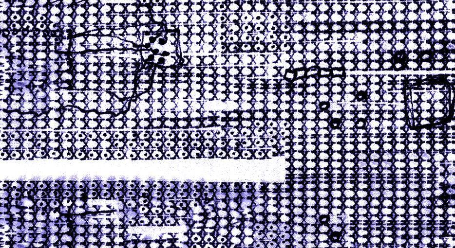

SPECIMEN / UNIDENTIFIED

∅

Read aloud yourself. Press SPACE at the indicated spoken cues. The interface is a fictional measurement apparatus; its readings are poetic, not physical measurements. Press ← to go back, R to reset, F for fullscreen. On Zoom, share this browser window or screen. Disable notification popups. Place asemic.png beside this HTML file. Click AUDIO: OFF to enable browser audio before performing; share computer audio in Zoom. TEXTURE toggles CRT noise and oscilloscope effects. Stage 07 keeps its deliberately silent audio, with a nearly flat oscilloscope trace and occasional failed lock-on spikes. Stage 08 introduces fragmented multilingual synthetic speech if audio is enabled. Keep your computer output volume moderate; test the mix with a listener.
Authored for live performance. All graphics and transitions run locally, without network requests or microphone access. Final stage uses browser speech synthesis, with available voices varying by system.